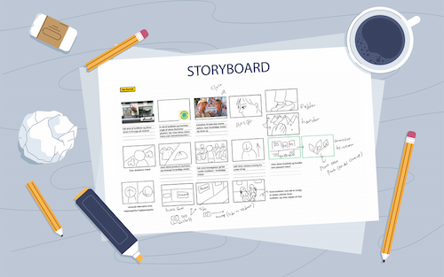

Tema 05
Indhold
01. Hovedtemaer
- Videoproduktion
- Redesign af virksomhedens hjemmeside
- Samarbejde
02. Formål

×
I dette tema var formålet at lære om videoproduktion og udvikle
færdigheder til mindre video- og fotoproduktioner og forbedre kommunikation med brugerne. Desuden
inkluderede formålet at redesigne en virksomheds hjemmeside som en praktisk anvendelse af
færdighederne.
03. Proces

Adobe Premiere Pro : I dette forløb lærte jeg først, hvordan
man anvender Adobe Premiere Pro, og jeg øvede mig ved at skabe en kort video
(Carhartt-video).
Specifikt fik jeg indsigt i, hvordan man redigerer videoer ved at anvende teknikker som brugen
af en
mastershot og integrationen af B-rolls.
Metoder : Jeg blev undervist i
shooting-for-the-edit-metoden, hvor jeg lærte at tænke fremad omkring, hvordan vores optagelser
senere ville blive redigeret, hvilket gjorde vores post-produktion mere effektiv. Jeg fandt stor
inspiration i konceptet "One Minute Wonder". Desuden uddybede jeg mine færdigheder ved at lære
om
Fiveshot-sekvensen, hvilket forbedre mit forståelsesniveau yderligere.

Interview : Ved starten af vores videoproduktionslæring samarbejdede vi i par om at optage en kort video om en, der har passion. Inden selve optagelsen brugte vi tid på at forberede en interviewguide og låne nødvendigt udstyr såsom kameraer og mikrofoner. Vores interviewsubjekt var Clara, en dedikeret studerende inden for Smykker, Teknologi og Business på KEA. Min rolle var at fange videoindholdet, hvor jeg brugte Five Shot Sequence og eksperimenterede med billedkomposition. Denne oplevelse styrkede mine tekniske færdigheder og gav indsigt i den omfattende proces bag videoproduktion.
Redigerering : Efter optagelsen redigerede jeg videoen ved at klippe, justere farver, finjustere lyden og tilføje baggrundsmusik. Til intro brugte jeg lower third, som viser titel og navn og samtidig blev titlen brugt til motion graphics. For at forbedre overgangene mellem klip og undgå jump cuts, integrerede jeg forskellige B-rolls, hvilket ikke kun skabte en mere dynamisk stemning, men også sørgede for en mere glidende overgang mellem scener. I outtroen anvendte jeg rulletekster og credits for at give vigtig information om projektets skabere. Jeg finjusterede også baggrundsmusik og lydniveau. Denne proces styrkede min forståelse for naturlig redigering med B-rolls.

Videositet : Efter fuldførelsen af videoredigeringen begav jeg mig ud i oprettelsen af en simpel hjemmeside, der fokuserer på interviewvideoer. Mit website omfatter en varieret række billeder, herunder portrætter, højformat og bredformat. Jeg implementerede to forskellige metoder til at uploade filmen på websitet (YouTube-format og HTML-format). En filmplakat-lignende sektion indeholder logline og medvirkende info, hvilket giver brugerne et indblik i indholdet. Denne proces styrkede mine færdigheder i at præsentere interviews online og arbejde med forskellige videoformater, samtidig med at jeg udviklede en forståelse for webudvikling og billedredigering.

Samarbejde : I
begyndelsen af tema 05, dannede vi team, og vores gruppe bestod af fem medlemmer. Først uddelte
vi
roller (ponytail, prophead og suit) i teamet ved at bruge The
Quick and Dirty method.
Planlægning : I vores arbejdsproces gjorde vi aktivt brug af
SCRUM og Trello, som
vores primære
projektstyringsværktøj. Vi organiserede vores opgaver i tre
hovedkategorier: TO DO, DOING, og DONE, hvilket gav os en klar og struktureret oversigt over
projektets status.
For at effektivisere arbejdsprocessen opdelte vi specifikke opgaver og tildelte dem til
relevante
teammedlemmer. Når en opgave blev fuldført, blev den flyttet til "DONE"-kategorien, og vi
indførte
en navne-tag-markeringsmetode for at kunne identificere, hvilket teammedlem der havde udført
opgaven. Dette gjorde det lettere at holde styr på individuelle bidrag og sikrede
gennemsigtighed i
arbejdsfordelingen. Gennem dette lærte jeg om SCRUM-metoden. Denne erfaring
udvidede min forståelse for effektiv projektstyring og samarbejde i et dynamisk miljø.

Research og analyse : I vores research- og analyseproces valgte vi først en passende virksomhed til vores projekt. Efterfølgende udførte vi grundig deskresearch og analyserede nøje den eksisterende hjemmeside. Vi anvendte forskellige metoder som styletile, moodboard, sitemap, wireframe og brugertests, som BERT-test, Heuristisk-test, tænke-højt-test og 5-sek-test. Fokus lå på at forstå virksomhedens forretningskoncept, herunder baggrundshistorie, målgrupper, produkter og USP. Denne omfattende tilgang gav os en dybdegående forståelse af virksomheden og dens online tilstedeværelse, hvilket var afgørende for at skabe en strategi for forbedringer.

Filmproduktion : Produktionen af filmen begyndte med at vi valgte en virksomhed og derefter indgik en aftale om at filme dem. Før vi gik i gang med optagelserne af interviewvideoen, udarbejdede vi en omfattende interviewguide, der præciserede dialoger og sceneflow. Samtidig udviklede vi et storyboard for at visualisere hver scene, hvilket gav os et klart grundlag for at planlægge kameravinkler og bevægelser. En vigtig del af processen var identifikationen af nødvendigt udstyr og teknologi til optagelserne, herunder kameraer, lysudstyr og mikrofoner. Vi gennemførte omhyggelige checks for at sikre, at alt udstyr fungerede korrekt, og at vi var klar til optagelserne. For at effektivisere arbejdsprocessen opdelte vi rollerne i filmholdet. Jeg havde ansvaret for selve optagelsen af interviewet. Gennem denne strukturerede tilgang og klare opgavefordeling sikrede vi en velorganiseret filmproduktionsproces og en god interviewvideo.
Filmproduktion : Produktionen af filmen begyndte med at vi valgte en virksomhed og derefter indgik en aftale om at filme dem. Før vi gik i gang med optagelserne af interviewvideoen, udarbejdede vi en omfattende interviewguide, der præciserede dialoger og sceneflow. Samtidig udviklede vi et storyboard for at visualisere hver scene, hvilket gav os et klart grundlag for at planlægge kameravinkler og bevægelser. En vigtig del af processen var identifikationen af nødvendigt udstyr og teknologi til optagelserne, herunder kameraer, lysudstyr og mikrofoner. Vi gennemførte omhyggelige checks for at sikre, at alt udstyr fungerede korrekt, og at vi var klar til optagelserne. For at effektivisere arbejdsprocessen opdelte vi rollerne i filmholdet. Jeg havde ansvaret for selve optagelsen af interviewet. Gennem denne strukturerede tilgang og klare opgavefordeling sikrede vi en velorganiseret filmproduktionsproces og en god interviewvideo.

Redigering : Under processen med at redigere videoen bevarede jeg et let og positivt vibe for at kontrastere med det tunge og alvorlige emne. Dette afspejles i valget af poppede farver og sjove motion-graphics. Den redesignede hjemmeside har et mere moderne look, mens den oprindelige side er mere vintage-agtig, så jeg blandede de to stilarter og gjorde samtidig brug af nogle af farverne på den redesignede løsning. For at håndtere jumpcuts, der opstod under klipningen, integrerede jeg b-roll for at skabe en glidende overgang mellem scenerne. Farverne i videoen blev redigeret ved at reducere det gule og tilføje mere saturation for at matche det ønskede moderne udseende. I videoens intro tilføjede jeg lower-thirds med navn og titel, og i outroen inkluderede jeg en tekst med credits. Adobe Audition blev brugt til lydredigering. Denne proces styrkede mine redigeringsfærdigheder, herunder klipning og evnen til at skabe en passende stemning. Resultatet er en effektiv video, der formidler det nødvendige budskab.
Se videoen på YouTube ➪

Ideudvikling : I ideudviklingsprocessen valgte vi hjemmesidens koncept med klart formål og målgruppe. For at definere stilen og stemningen, brugte vi styletile og moodboard. Efterfølgende anvendte vi brainstorming og Crazy 8's for at strukturere hjemmesidens layout og udarbejdede et sitemap. Ved valg af løsningsudkast begyndte vi at skabe wireframes og prototyper, efterfulgt af et layoutdiagram inden kodning. Brugertests, såsom BERT-test, Heuristisk-test, 5-sek-test, tænk-højt-test og Lighthouse test blev udført for at forfine og validere designet. Gennem denne proces udviklede vi vores hjemmeside mere konkret og jeg fik forståelse for brugeroplevelser.
GitHub : Under udviklingen af vores hjemmeside stødte min gruppe på udfordringer med GitHub, hvor vi havde to master-brancher, hvilket skabte konflikter. Vi oplevede også problemer med pull- og push-processen (til sidst blev vores hjemmesides layout ødelagt). Vi kunne ikke finde ud af hvorfor der var to branches, men gennem denne proces blev det klart, at det er vigtigt ikke at placere CSS, HTML og JavaScript i mapper. Desuden opdagede vi, at det ikke er hensigtsmæssigt at inkludere ens eget navn i kodefiler, da de gælder for hele hjemmesiden og kan forvirre andre, der ser koden senere. Dette lærte mig vigtige GitHub-best practices og hvordan man effektivt samarbejder om kodning.
Pecha Kucha : Vi implementerede Pecha Kucha-metoden i vores
præsentation ved at begrænse hvert slide til 20 sekunder. Dette tvang os til at reducere
antallet af
ord og kun vælge de mest afgørende nøgleord. I processen med at forberede præsentationen opnåede
jeg
indsigter i de centrale punkter i vores projekt og lærte, hvordan man identificerer og fremhæver
det
væsentligste. Denne tilgang forbedrede en klar og
tydelig formidling af vores projekt. Efter præsentationen modtog vi positiv feedback på vores
3-minutters video. Vi har opnået en vellykket balance mellem det alvorlige emne og den
afslappede
stemning, hvilket har gjort videoen engagerende og lettilgængelig for seerne. Desuden er videoen
blevet kategoriseret på en passende måde under "Stories," hvilket yderligere understreger dens
narrative og følelsesmæssige aspekter. Desværre kunne vi ikke få feedback på vores hjemmeside
grundet de tekniske udfordringer. Vi arbejdede hårdt på at løse dette
problem, men det lykkedes desværre ikke i tide til præsentationen. Se præsentation ➪
04. Produkt
Redesignede-website : I redesignprocessen fokuserede vi
på et simpelt og moderne design for at
appellere bredere. Vi ønskede at bevare den afslappede stemning og fokuset på bæredygtighed.
Selvom
brugertestresultaterne ikke var ideelle, afspejler vores koncept en moderne tilgang. Trods
udfordringerne, lærte jeg værdifulde lektioner om GitHub, styrkede mine samarbejdsevner og udviklede
mine
tekniske færdigheder. Gennem disse udfordringer forbedrede jeg ikke kun mine tekniske evner,
men
også min evne til at håndtere komplekse situationer og problemløsning i projektarbejde.
Læs
dokumentationen ➪